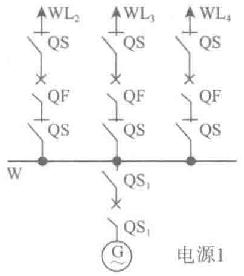
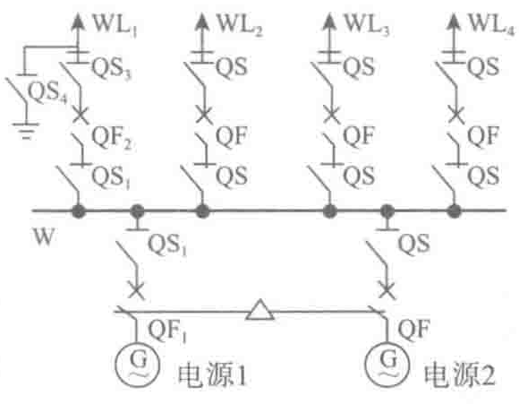
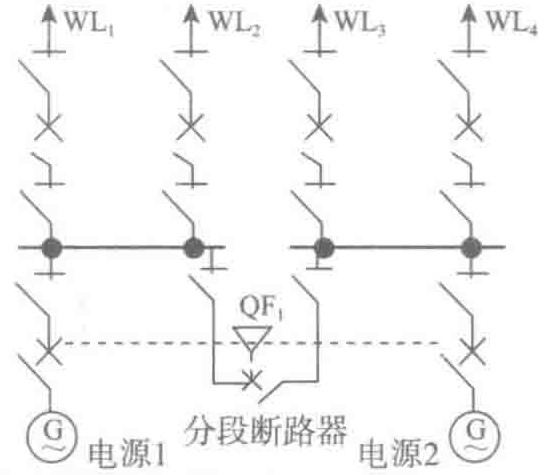
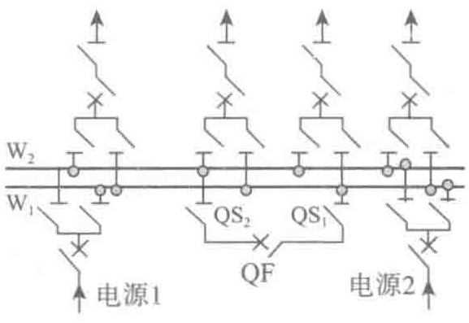

典型的主接线形式如表2-8所示。
| 形 式 | 接线示意图 | 接线描述 | 特点与应用 |
|---|---|---|---|
| 单母线 接线 |  | （1）电源进线和所有引出线都汇接于同一组母线上。 （2）母线配置有隔离开关和空气开关以便于电气保护和日常维护 | （1）简单、清晰、设备少； （2）运行操作方便有利于扩建； （3）可靠性与灵活性不高； （4）适合出线回路较少的小型变配电所，10kV配电装置出线回路数不宜超过5回；35kV不宜超过3回； （5）两路电源进线的单母线接线可供C级机房负荷 |
 | （1）采用两路电源进线可以有效提高供电可靠性。 （2）两路电源必须实行操作联锁。 （3）只有在工作电源进线断路器断开后，备用电源断路才能接通 | ||
| 单母线 分段接线 |  | （1）有两种运行方式：分段断路器接通运行；分段断路器断开，分段单独运行。 （2）简单、清晰、设备少。 （3）运行操作方便且有利于扩建。 （4）缩小了母线故障的影响范围，可靠性有所提高。 （5）母线分段的数目，通常以2～3分段为宜 | （1）6～10kV配电装置出线6回及以上； （2）35kV出线数为4～8回； （3）110～220kV出线数为3～4回； （4）可供一级负荷 |
| 双母线 接线 |  | （1）具有两组母线W1和W2。每一回路经一台断路器和两组隔离开关分别与两组母线连接，母线之间通过母线联络（简称母联）连接。 （2）母联断开，一组母线工作，另一组母线备用，全部进出线接于运行母线上。 （3）母联断开，进出线分别接于两组母线，两组母线分别运行。 （4）母联闭合，电源和馈线平均分配在两组母线上 | （1）中大型数据中心上级变电站35～110kV的变电所； （2）接线复杂、操作频繁； （3）可靠性较好； （4）造价较高 |